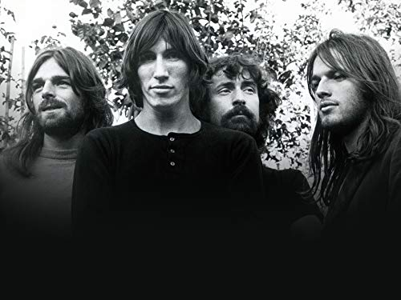

Pink Floyd
Pink Floyd are an English rock band formed in London in 1965. Gaining an early following as one of the first British psychedelic groups, they were distinguished by their extended compositions, sonic experimentation, philosophical lyrics and elaborate live shows. They became a leading band of the progressive rock genre, cited by some as the greatest progressive rock band of all time.